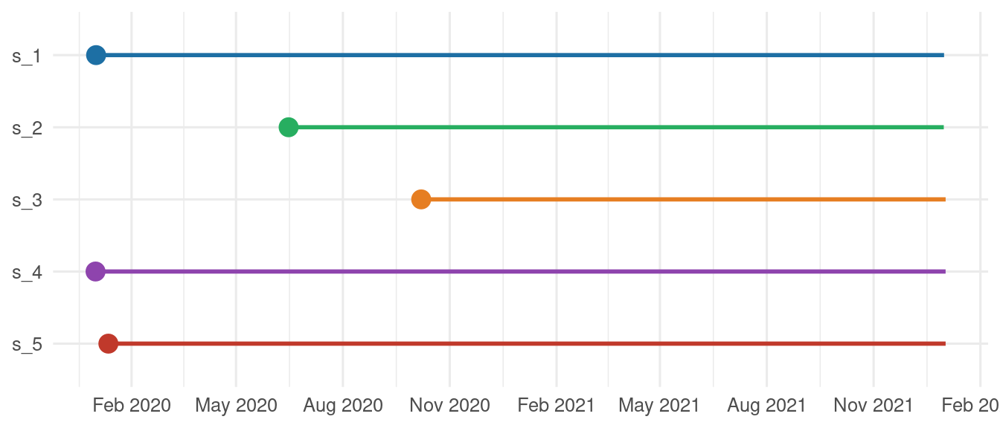
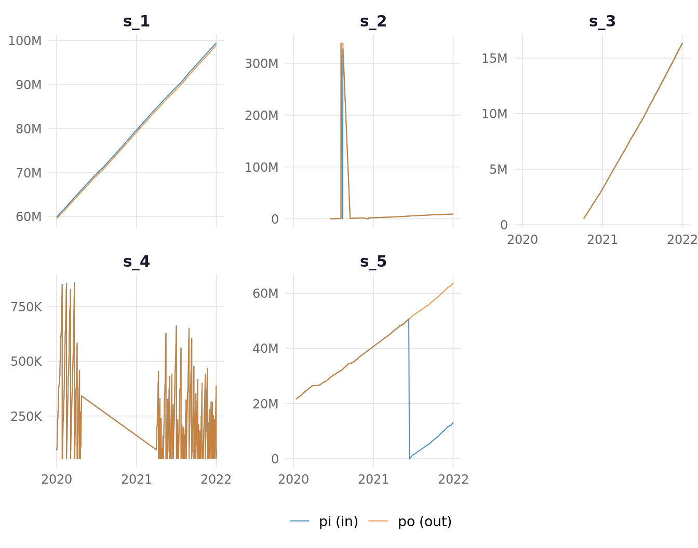
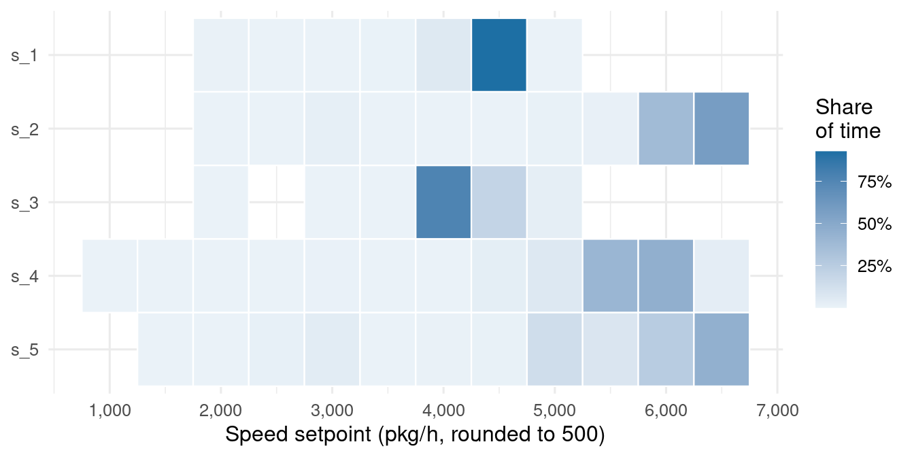
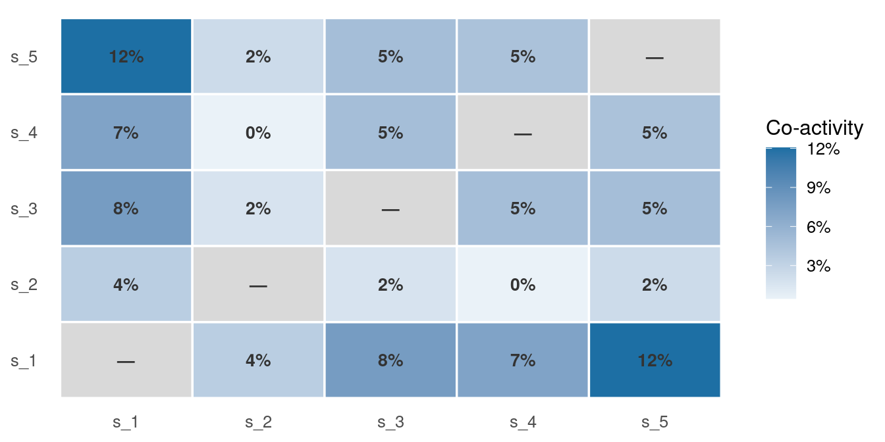

| equipment_ID | type | alarm | start | end | speed | pi | po |
|---|---|---|---|---|---|---|---|
| s_1 | scheduled_downtime | A_000 | 2020-01-01 11:21 | 2020-01-01 11:22 | 0 | 59916598 | 59517799 |
| s_1 | idle | A_000 | 2020-01-01 11:22 | 2020-01-01 11:23 | 0 | 59916598 | 59517799 |
| s_1 | scheduled_downtime | A_000 | 2020-01-01 11:23 | 2020-01-01 11:46 | 0 | 59916598 | 59517799 |
| s_1 | idle | A_000 | 2020-01-01 11:46 | 2020-01-01 12:11 | 0 | 59916598 | 59517799 |
| s_1 | scheduled_downtime | A_000 | 2020-01-01 12:11 | 2020-01-01 12:59 | 0 | 59916598 | 59517799 |
| s_1 | idle | A_000 | 2020-01-01 12:59 | 2020-01-01 12:59 | 0 | 59916598 | 59517799 |
Episode 1 — First Read
132 alarm codes. No dictionary. We’ll have to figure them out.
First look at the data. Here’s what a few rows look like:
Each row is a time interval — a continuous period during which the machine was in a given state. The type column says what was happening, alarm gives the alarm code (if any), and speed is recorded alongside.
Five machines, but they didn’t all start at the same time — and they didn’t start from zero.

s_2 and s_3 show up later — not all machines were active from the start.
What a row looks like
Each row is an interval — a continuous period in a given state. The end of one is the start of the next. No gaps. No overlaps.
graph LR A[sched. downtime] --> B[idle] B --> C[production] C --> D[downtime] D --> E[production] style A fill:#e8dcc8,color:#333 style B fill:#c8c8c8,color:#333 style C fill:#1d6fa4,color:#fff style D fill:#c0392b,color:#fff style E fill:#1d6fa4,color:#fff
There are exactly five state types:
| State | Count | Share |
|---|---|---|
| production | 146795 | 34.2% |
| performance_loss | 118584 | 27.6% |
| downtime | 92084 | 21.4% |
| idle | 50149 | 11.7% |
| scheduled_downtime | 21782 | 5.1% |
The five state types already point towards performance analysis. But one number stands out.
performance_loss: 28% of all intervals. The machines are running — but not at full speed. No breakdown. No alarm. And yet it’s the second most frequent state in the log.
Why this distinction matters
A machine that runs all day with no downtime but spends half its time below full speed looks healthy if we only count stoppages. performance_loss captures the gap — and it’s large.
The codes I can’t read
Every unplanned downtime interval carries an alarm code. There are 133 distinct codes in this log — from A_000 to A_132. A_000 seems to mean ‘normal operation’. The other 132 appear during stoppages.
I found no public dictionary to translate these codes into fault descriptions.
132 alarm codes, no Rosetta Stone. Just repeated patterns, frequencies, co-occurrences — and no translation key. We’ll have to figure out the meaning from behaviour. That’s what the following episodes do.
The counters — a common misreading
The log also records two counters: pi (packages counted at the entry of the machine) and po (packages counted at the exit).
| equipment_ID | start | type | pi | po | delta_pi | delta_po |
|---|---|---|---|---|---|---|
| s_1 | 2020-01-01 14:09 | production | 59,917,239 | 59,518,425 | 629 | 626 |
| s_1 | 2020-01-01 14:22 | production | 59,917,286 | 59,518,470 | 47 | 45 |
| s_1 | 2020-01-01 14:23 | production | 59,919,383 | 59,520,563 | 2,097 | 2,093 |
| s_1 | 2020-01-01 14:51 | production | 59,919,421 | 59,520,603 | 38 | 40 |
| s_1 | 2020-01-01 14:52 | production | 59,922,962 | 59,524,144 | 3,541 | 3,541 |
The values are large and grow from row to row — they’re cumulative counters, not per-interval counts. To get what happened during an interval, we need the difference with the previous row (delta_pi, delta_po).
If these counters are reliable, they should grow steadily over time — a straight line going up.

Ouch… s_1 and s_3 are clean — steady growth, pi and po tracking each other. The rest is less reassuring. s_2 shows a spike to 300 million then drops back to near zero. s_4 oscillates instead of growing — the counter goes down, which a cumulative counter shouldn’t do. s_5 has a clean reset to zero mid-series.
These counters can’t be trusted at interval level. And on some machines, not even at daily level.
What this rules out
The reject rate calculated from delta_po − delta_pi per interval measures sensor behaviour, not production quality. On short windows, the signal is drowned in noise. For an interpretable figure, aggregating over at least a full day is necessary.
Five machines — but not a fleet
We’d expect these five machines to be of the same type and do the same work. The speed setpoints say otherwise.

The speed regimes don’t overlap. Some machines run at high throughput; others at much lower setpoints. They don’t run at the same speed.
And their co-activity confirms the same thing:

How to read this matrix
Each cell shows the fraction of total time where both machines are simultaneously in production (5-minute grid over the full history). A score near zero means they almost never run together — they alternate. A high score means they operate in parallel.
Some pairs run together. Others almost never do. Comparing their performance as if they were doing the same job would give us numbers that mean nothing.
What the machines are hiding
No diagnosis yet. But we now have a map of what we don’t know.
133 alarm codes with no dictionary. A state — performance_loss — that slips through standard reporting. Counters that drift. Five machines that aren’t in the same league.
What to do about it
These five machines can’t be pooled. Different speed regimes, different histories, different co-activity patterns. Aggregating them would give us averages that describe none of them.
The counters are unreliable at interval level. pi and po are useful over full days or longer. Below that, they measure noise.
performance_loss matters. It accounts for 28% of intervals. If we only look at downtimes, we miss a quarter of what’s going on.
Next: Let’s compute OEE. The results are not what the availability numbers would suggest.